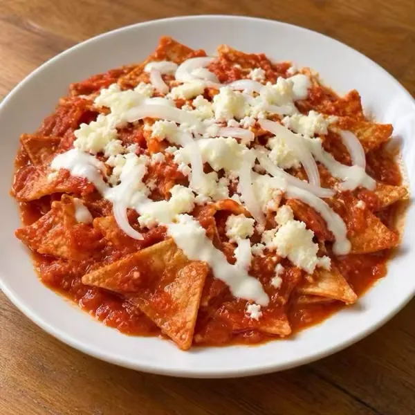
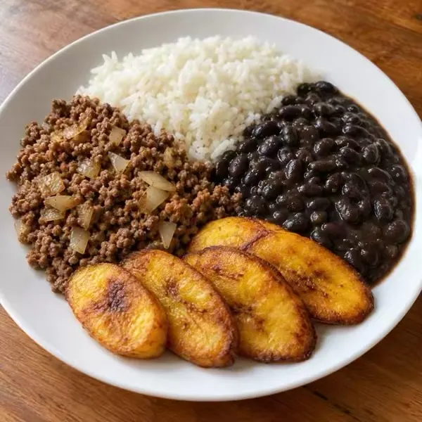
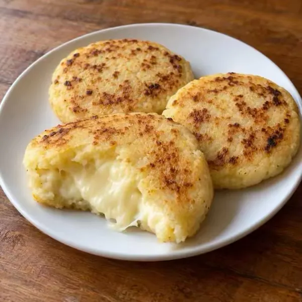
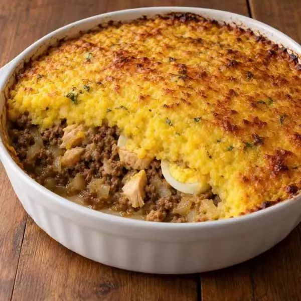
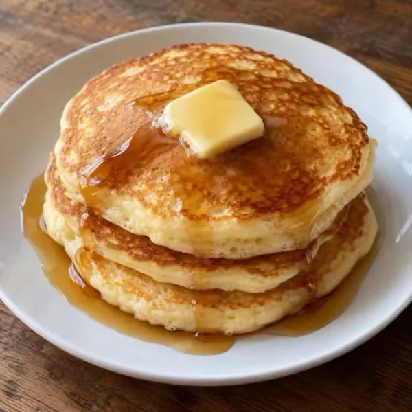

Vencito resta gratis
Prodotti, scadenze, promemoria, scansione, ricette e lista della spesa. Le funzioni che usi restano disponibili.
LA TUA CUCINA, PIÙ ORGANIZZATA
Controlla le scadenze, scopri ricette e organizza i tuoi pasti con Vencito.

Gratis · Senza pubblicità · Senza account per uso locale
 Vista illustrativa dell’app
Vista illustrativa dell’appPIÙ IDEE, MENO SPRECHI
Oltre 1.500 piatti per ogni giorno, con valori nutrizionali indicativi.
Tre idee dal catalogo per il prossimo pasto. Tocca un piatto per vedere come prepararlo.
UN PO’ DI ORDINE, PIÙ TRANQUILLITÀ
Scegli le ricette, organizza i pasti e aggiungi ciò che manca alla lista della spesa.
Organizzati con Vencito →
Scegli un giorno per vedere cosa manca.
GUARDA COME FUNZIONA
Scopri come scansionare una confezione e aggiungere un prodotto in Vencito.
Funzioni ↓La scansione nel video è una simulazione illustrativa.
Come funziona
Della confezione, con la data in vista. Oppure inquadra dal vivo: legge il codice a barre e la data insieme. Puoi aggiungere altre foto: prodotto, codice a barre e data di scadenza.

Legge la data, propone nome e categoria e cerca il codice a barre in Open Food Facts e nelle sue basi di cosmetici e altri prodotti. Controlli e salvi.

Una notifica al giorno, all'ora che scegli, con ciò che sta per scadere: di default 30, 15, 7, 3 e 1 giorno prima.
Provalo qui
È una versione semplificata del lettore di date dell'app. Capisce i formati stampati sulle confezioni e preferisce la data di scadenza a quella di produzione.
Data di scadenza
—
—Funzioni
EXP 14/02/27, 25-08-2026, 25 AGO 2026, 08/2027, SCAD 04/27… Distingue scadenza e produzione e legge confezioni in sei lingue.
Scansione dal vivo o dalla foto, con EAN, UPC e QR. Open Food Facts (e le sue basi di cosmetici e altri prodotti, come i farmaci senza ricetta) compila nome, marca e categoria.
Ricette con ciò che hai, partendo da ciò che scade presto. Un catalogo proprio di oltre 1.500 piatti comuni e facili di vari paesi, con foto e nella tua lingua, per colazione, merenda, pranzo e cena, con modalità cucina e ricette salvate. Funziona senza internet.
Un calendario con una ricetta suggerita al giorno, usando prima ciò che scade prima. Cambia qualsiasi ricetta, toglila o aggiungine un'altra, e aggiungi alla lista ciò che manca per la settimana.
Annota cosa devi comprare, aggiungi con un tocco ciò che manca a una ricetta o lascia che aggiunga ciò che finisce. Spunta ciò che hai comprato e condividi la lista come testo.
Tieni i prodotti di più di una casa e scegli quale vedere, oppure vedile tutte insieme. Gli avvisi e il widget riuniscono le scadenze di tutte le case.
Prodotti, Ricette, Spesa e Piano in una barra in basso; le Impostazioni restano in alto. Uguale su iPhone e Android.
Scansione continua: codice a barre, data, fatto. Se una data non viene letta con sicurezza, l'app ti chiede di confermarla prima di salvare.
Oltre cento prodotti comuni con foto, per aggiungere ciò che hai comprato con un tocco: latte, uova, pane, frutta… Propone per primi quelli che usi di più e stima la scadenza di ogni prodotto.
Quanto hai consumato, quale quota in tempo, cosa hai buttato e cosa hai salvato all'ultimo, con la tua serie senza sprechi, un grafico di sei mesi e il confronto con il periodo precedente. «Butta» registra ciò che si è rovinato; «Elimina» corregge un errore di inserimento.
Inquadra il codice a barre o il QR del prodotto usato e viene scalata un'unità di quello che scade prima. Passa al successivo senza toccare lo schermo.
Da una foto (fotocamera o galleria) o un PDF: legge le righe, ignora tasse e pagamenti, stima la scadenza di ogni prodotto e, se lo scontrino riporta il codice a barre, cerca il nome reale.
In una ricetta, condividi foto e istruzioni con un tocco: scegli ChatGPT, invia, attiva la modalità vocale e ti guida passo passo, con le porzioni scelte.
Per ciò che non scade o non ha data: salvato a parte, senza avvisi.
In un solo fotogramma legge il codice a barre, la data di scadenza e il nome del prodotto. Ogni valore viene confermato solo quando si ripete, per evitare letture sfocate.
Conserva una foto del prodotto, una del codice a barre, una della data di scadenza e quante ne vuoi. Compaiono in una galleria da scorrere.
Nella schermata Home e nella schermata di blocco, con ciò che scade dopo. Tocca un prodotto per aprirlo nell'app.
Scaduti, in scadenza e prossimi, con un riepilogo in alto e una miniatura per ogni prodotto.
Scorri per usare un'unità o rimuovere il prodotto. Se sbagli, su iPhone scuoti per annullare e su Android tocca «Annulla».
Elenco e dettaglio affiancati, in qualsiasi orientamento; su iPad anche con multitasking e, con la tastiera, ⌘N aggiunge un prodotto. Sui tablet Android, la stessa vista a due pannelli.
Spagnolo, inglese, portoghese (Brasile), francese, italiano e tedesco. Cambi al volo in Impostazioni.
Funziona con VoiceOver e con testi grandi. Ogni prodotto viene letto per intero: nome, stato e data.
Chiedi «Cosa scade questa settimana?», aggiungi un prodotto o segnalo come consumato con la voce.
Dalla notifica segni «Consumato» o «Posticipa», senza aprire l'app.
Una volta aperta, una confezione scade prima (latte, maionese…) in base ai giorni che dura aperta.
Ogni unità consumata viene registrata, per mese, con l'indicazione «in tempo» o «già scaduto».
Rileva i prodotti ripetuti e li unisce, scegliendo quale tenere.
Esporta e importa tutto in un file, con o senza foto: prodotti, cronologia, case e lista della spesa.
Cerca per nome e filtra per categoria e posizione: dispensa, frigo, freezer…
Scegli 6 ricette e condividi un'immagine su WhatsApp per votare. La vincitrice entra nel piano di oggi.
Icone e filtri per dieta nelle ricette: vegetariana, senza glutine e altro.
Guarda dove (frigo, freezer, dispensa…) si spreca di più e quali ricette aggiungi più spesso al piano.
Ricette
Oltre 1.500 piatti comuni e facili di vari paesi, ognuno con la sua foto. Eccone alcuni.

 · 40 min
· 40 min

 · 55 min
· 55 min
 · 25 min
· 25 min

 · 25 min
· 25 min

 · 25 min
· 25 min

· 50 min

 · 25 min
· 25 min

 · 60 min
· 60 min
 · 35 min
· 35 min
 · 25 min
· 25 min

 · 30 min
· 30 min

 · 30 min
· 30 min

 · 60 min
· 60 min

 · 50 min
· 50 min

 · 30 min
· 30 min

 · 20 min
· 20 min
Le ricette vengono suggerite in base a ciò che hai e a ciò che scade prima.
VENCITO PLUS · Prossimamente
Vencito Plus è in preparazione: un nuovo modo di organizzare la casa insieme.
Prova prevista al lancio. Non ancora disponibile.
Prodotti, scadenze, promemoria, scansione, ricette e lista della spesa. Le funzioni che usi restano disponibili.
Case condivise e inviti per organizzare insieme i prodotti di casa.
In preparazione per iPhone e Android. Funzioni e condizioni definitive saranno confermate prima del lancio.
L’uso locale resterà senza account. Condividere una casa con Plus richiederà un account e la sincronizzazione con il servizio.
Questa pagina non offre pagamenti o abbonamenti. Prezzi e condizioni da confermare.
Privacy
Vencito non ha account, né server propri, né analisi, né pubblicità.
I prodotti, le foto e le impostazioni sono salvati sul tuo iPhone, iPad o telefono Android. Sui dispositivi Apple, se attivi la sincronizzazione con iCloud, anche nel tuo iCloud privato (lo sviluppatore non vi ha accesso).
Il testo delle foto e i codici a barre vengono letti sul dispositivo: con il riconoscimento di Apple su iPhone e iPad, e con ML Kit di Google su Android.
Per cercare un prodotto, solo il numero del codice a barre viene inviato a Open Food Facts, alle sue basi sorelle e, come ultima risorsa, a GTINSearch. Puoi disattivarlo.
Le notifiche le programma il telefono stesso. Non passano per nessun server.
Leggi l'informativa sulla privacy completa
Le informazioni sopra descrivono la versione attuale. Le case condivise di Plus richiederanno un account e l’invio dei dati condivisi al servizio. La politica sulla privacy sarà aggiornata prima del lancio.
FAQ
Vencito è gratis. Plus sarà un’opzione aggiuntiva, ancora in preparazione, con 1 mese di prova gratis previsto al lancio. I prezzi non sono ancora definiti.
Sì. Solo la ricerca del prodotto tramite codice a barre richiede internet.
Sì. Ci sono versioni per iPhone, iPad e Android, tablet compresi, con le stesse sei lingue. I dati non si sincronizzano tra un iPhone e un Android: si trasferiscono esportando e importando un file dalle Impostazioni.
Sì. In Impostazioni esporti un file con tutti i tuoi prodotti (con o senza foto) e lo importi su un altro dispositivo.
L'app usa l'ultimo giorno di quel mese, che è il modo in cui si leggono le confezioni. Capisce sia 08/2027 che SCAD 04/27.
Sì. Oltre alla foto principale puoi aggiungerne una del codice a barre, una della data di scadenza e fino a 8 in più. Scorrile nella schermata di dettaglio; sono incluse nell'esportazione.
Un’opzione per condividere case con altre persone e avere più comodità. È in preparazione, con 1 mese di prova gratis previsto al lancio; prezzi e condizioni saranno confermati prima. Le funzioni gratuite attuali resteranno disponibili.
Un'altra domanda o un problema? Contatta l'assistenza.
UN PICCOLO CAMBIAMENTO OGNI GIORNO